2 + 3[1] 510 / 4[1] 2.52^10[1] 1024(1 + 2) * 3 # parentheses work as usual[1] 9sqrt(16)[1] 4log(100) # natural logarithm[1] 4.60517log10(100)[1] 2exp(1)[1] 2.718282Objective: get comfortable with R starting from zero, compute and interpret simple descriptive statistics, and meet the SummarizedExperiment, the central data structure for genomic experiments in Bioconductor.
What you will learn:
ggplot2SummarizedExperimentDownload the data files for this lab and save them in a folder called data inside your working folder:
check airway
When you open RStudio you see four panels:
A few habits that will save you time:
Ctrl + Enter (Cmd + Enter on a Mac).# is a comment and is ignored by R. Use comments to explain to your future self what the code does.The simplest thing you can do with R is arithmetic.
2 + 3[1] 510 / 4[1] 2.52^10[1] 1024(1 + 2) * 3 # parentheses work as usual[1] 9sqrt(16)[1] 4log(100) # natural logarithm[1] 4.60517log10(100)[1] 2exp(1)[1] 2.718282Results can be stored in objects using the assignment operator <- (read it as “gets”).
weight_kg <- 70
height_m <- 1.75
bmi <- weight_kg / height_m^2
bmi[1] 22.85714Some rules about object names:
. and _, but cannot start with a number;bmi and BMI are two different objects;height_m is better than x).ls() lists the objects in your environment, rm() removes one.
ls()[1] "bmi" "height_m" "weight_kg"rm(bmi)
ls()[1] "height_m" "weight_kg"A function takes some inputs (arguments), does something, and returns an output. We have already used sqrt() and log(). Arguments can be given by position or by name; many arguments have default values.
round(3.14159) # default: digits = 0[1] 3round(3.14159, digits = 2) # named argument[1] 3.14log(1:5) # default base = exp(1)[1] 0.0000000 0.6931472 1.0986123 1.3862944 1.6094379log(1:5, base = 10)[1] 0.0000000 0.3010300 0.4771213 0.6020600 0.6989700To read the documentation of a function, use ?. The Usage section shows the arguments and their defaults, and the Examples at the bottom of the page can be copied and run.
?round
?meanThe basic data structure in R is the vector, an ordered collection of values of the same type. Vectors are created with c() (“combine”).
expr <- c(5.2, 6.1, 4.8, 7.3, 5.9) # expression of a gene in 5 samples
expr[1] 5.2 6.1 4.8 7.3 5.9length(expr)[1] 51:10 [1] 1 2 3 4 5 6 7 8 9 10seq(0, 1, by = 0.25)[1] 0.00 0.25 0.50 0.75 1.00rep("ctrl", times = 3)[1] "ctrl" "ctrl" "ctrl"Most operations in R are vectorized: they are applied to each element.
expr * 2[1] 10.4 12.2 9.6 14.6 11.8expr - mean(expr)[1] -0.66 0.24 -1.06 1.44 0.04log2(expr)[1] 2.378512 2.608809 2.263034 2.867896 2.560715You extract elements with square brackets [ ].
expr[1] # first element[1] 5.2expr[c(1, 3)] # first and third[1] 5.2 4.8expr[2:4] # from second to fourth[1] 6.1 4.8 7.3expr[-1] # all but the first[1] 6.1 4.8 7.3 5.9Every vector has a type. The most common ones are numeric, character, and logical. class() tells you the type of an object.
class(expr)[1] "numeric"genes <- c("TP53", "BRCA1", "MYC")
class(genes)[1] "character"is_up <- c(TRUE, FALSE, TRUE)
class(is_up)[1] "logical"A vector can contain only one type: if you mix them, R converts everything to the most general type.
c(1, "a", TRUE)[1] "1" "a" "TRUE"Categorical variables are stored as factors, which know the set of possible values (the levels).
group <- factor(c("ctrl", "trt", "trt", "ctrl", "trt"))
group[1] ctrl trt trt ctrl trt
Levels: ctrl trtlevels(group)[1] "ctrl" "trt" table(group)group
ctrl trt
2 3 Comparisons return logical vectors, which are very useful for selecting data.
expr > 5.5[1] FALSE TRUE FALSE TRUE TRUEexpr[expr > 5.5] # keep only the values above 5.5[1] 6.1 7.3 5.9sum(expr > 5.5) # TRUE counts as 1: how many values are above 5.5?[1] 3which(expr > 5.5) # positions of those values[1] 2 4 5expr > 5 & expr < 6 # AND[1] TRUE FALSE FALSE FALSE TRUEexpr < 5 | expr > 7 # OR[1] FALSE FALSE TRUE TRUE FALSEgenes %in% c("MYC", "KRAS") # is each element in a set?[1] FALSE FALSE TRUEMissing data are represented by NA (“not available”). Any calculation involving an NA gives NA, unless you tell the function to remove them.
expr_na <- c(5.2, NA, 4.8, 7.3, 5.9)
mean(expr_na)[1] NAmean(expr_na, na.rm = TRUE)[1] 5.8is.na(expr_na)[1] FALSE TRUE FALSE FALSE FALSEsum(is.na(expr_na)) # how many missing values?[1] 1A data frame is a table: each column is a vector (a variable), and all columns have the same length (one row per observation). R comes with some example datasets. PlantGrowth contains the dry weight of plants grown in a control condition and under two treatments.
PlantGrowth weight group
1 4.17 ctrl
2 5.58 ctrl
3 5.18 ctrl
4 6.11 ctrl
5 4.50 ctrl
6 4.61 ctrl
7 5.17 ctrl
8 4.53 ctrl
9 5.33 ctrl
10 5.14 ctrl
11 4.81 trt1
12 4.17 trt1
13 4.41 trt1
14 3.59 trt1
15 5.87 trt1
16 3.83 trt1
17 6.03 trt1
18 4.89 trt1
19 4.32 trt1
20 4.69 trt1
21 6.31 trt2
22 5.12 trt2
23 5.54 trt2
24 5.50 trt2
25 5.37 trt2
26 5.29 trt2
27 4.92 trt2
28 6.15 trt2
29 5.80 trt2
30 5.26 trt2head(PlantGrowth) weight group
1 4.17 ctrl
2 5.58 ctrl
3 5.18 ctrl
4 6.11 ctrl
5 4.50 ctrl
6 4.61 ctrldim(PlantGrowth) # number of rows and columns[1] 30 2str(PlantGrowth) # structure: type of each column'data.frame': 30 obs. of 2 variables:
$ weight: num 4.17 5.58 5.18 6.11 4.5 4.61 5.17 4.53 5.33 5.14 ...
$ group : Factor w/ 3 levels "ctrl","trt1",..: 1 1 1 1 1 1 1 1 1 1 ...summary(PlantGrowth) weight group
Min. :3.590 ctrl:10
1st Qu.:4.550 trt1:10
Median :5.155 trt2:10
Mean :5.073
3rd Qu.:5.530
Max. :6.310 Columns are extracted with $; rows and columns with [row, column].
PlantGrowth$weight [1] 4.17 5.58 5.18 6.11 4.50 4.61 5.17 4.53 5.33 5.14 4.81 4.17 4.41 3.59 5.87
[16] 3.83 6.03 4.89 4.32 4.69 6.31 5.12 5.54 5.50 5.37 5.29 4.92 6.15 5.80 5.26PlantGrowth[1:3, ] # first three rows, all columns weight group
1 4.17 ctrl
2 5.58 ctrl
3 5.18 ctrlPlantGrowth[, "group"] # one column [1] ctrl ctrl ctrl ctrl ctrl ctrl ctrl ctrl ctrl ctrl trt1 trt1 trt1 trt1 trt1
[16] trt1 trt1 trt1 trt1 trt1 trt2 trt2 trt2 trt2 trt2 trt2 trt2 trt2 trt2 trt2
Levels: ctrl trt1 trt2PlantGrowth[PlantGrowth$group == "ctrl", ] # rows of the control group weight group
1 4.17 ctrl
2 5.58 ctrl
3 5.18 ctrl
4 6.11 ctrl
5 4.50 ctrl
6 4.61 ctrl
7 5.17 ctrl
8 4.53 ctrl
9 5.33 ctrl
10 5.14 ctrlYou can also build a data frame yourself.
samples <- data.frame(
sample = c("S1", "S2", "S3", "S4", "S5"),
group = group,
expr = expr
)
samples sample group expr
1 S1 ctrl 5.2
2 S2 trt 6.1
3 S3 trt 4.8
4 S4 ctrl 7.3
5 S5 trt 5.9Packages extend R with new functions and data. They are installed once with install.packages() (or BiocManager::install() for Bioconductor packages), and loaded in every new session with library().
library(ggplot2)Before any statistical test, we describe the data: where is the “center” of the distribution, and how much do the values vary around it?
We use the plant weights of the control group.
ctrl <- PlantGrowth$weight[PlantGrowth$group == "ctrl"]
ctrl [1] 4.17 5.58 5.18 6.11 4.50 4.61 5.17 4.53 5.33 5.14The mean is the sum of the values divided by their number, \(\bar{x} = \frac{1}{n}\sum_{i=1}^n x_i\).
sum(ctrl) / length(ctrl) # by hand[1] 5.032mean(ctrl) # built-in function[1] 5.032The median is the value in the middle once the data are sorted: half of the observations are below it and half above. With an even number of observations it is the average of the two central values.
sort(ctrl) [1] 4.17 4.50 4.53 4.61 5.14 5.17 5.18 5.33 5.58 6.11median(ctrl)[1] 5.155The two measures behave very differently when the data contain extreme values. Suppose that a weight was mistyped as 51.7 instead of 5.17.
ctrl_typo <- ctrl
ctrl_typo[2] <- 51.7
mean(ctrl); mean(ctrl_typo)[1] 5.032[1] 9.644median(ctrl); median(ctrl_typo)[1] 5.155[1] 5.155The mean is pulled towards the outlier, while the median barely changes: the median is robust to outliers. This matters a lot with genomic data, which are often very skewed (we will see an example with RNA-seq counts at the end of this lab).
The variance measures how far the values are, on average, from the mean. The sample variance is
\[ s^2 = \frac{1}{n-1}\sum_{i=1}^n (x_i - \bar{x})^2. \]
We divide by \(n-1\) rather than \(n\) because we estimate the mean from the same data; with this correction, \(s^2\) is an unbiased estimate of the population variance. Let’s compute it step by step.
deviations <- ctrl - mean(ctrl) # distance of each value from the mean
deviations [1] -0.862 0.548 0.148 1.078 -0.532 -0.422 0.138 -0.502 0.298 0.108sum(deviations) # always 0 (up to rounding)! that's why we square them[1] 0sum(deviations^2) / (length(ctrl) - 1)[1] 0.3399956var(ctrl)[1] 0.3399956The variance is expressed in squared units (here, squared grams). The standard deviation is its square root, and has the same unit as the data.
sqrt(var(ctrl))[1] 0.5830914sd(ctrl)[1] 0.5830914A boxplot shows median, quartiles, and potential outliers for each group in one picture. Note the formula notation weight ~ group, read as “weight as a function of group”.
boxplot(weight ~ group, data = PlantGrowth,
ylab = "Dry weight", col = "lightblue")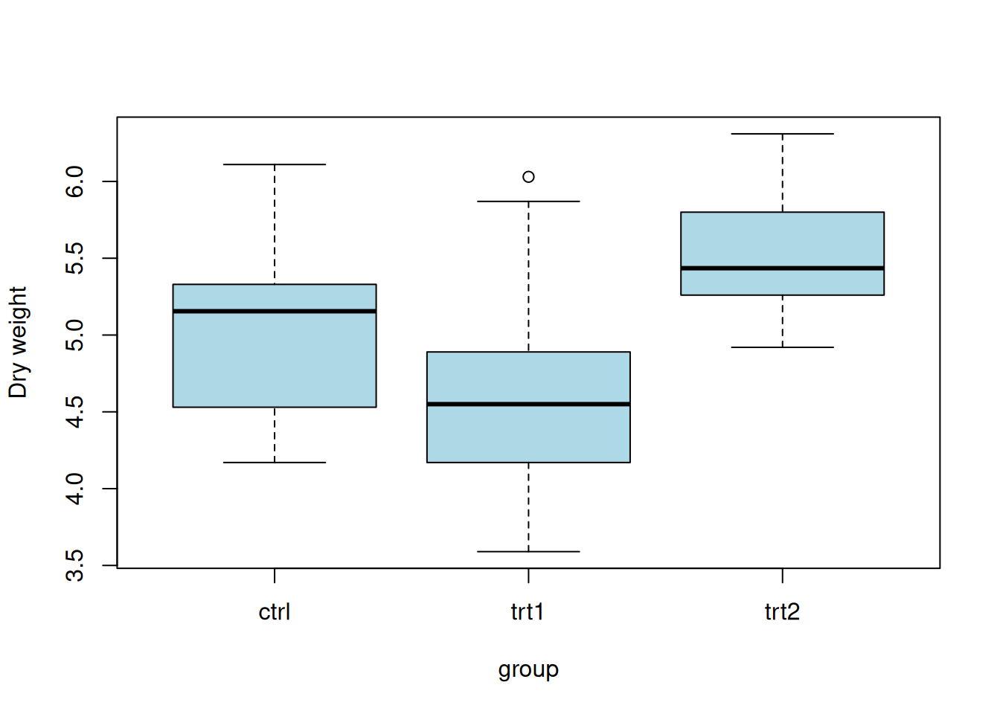
We now work with a real dataset: clinical information about patients with acute lymphoblastic leukemia (ALL).
The file is tab-separated, so we use read.delim(). Check ?read.delim for other options, and read.csv() for comma-separated files.
pdata <- read.delim("data/ALLphenoData.tsv")Explore the basic properties of the object we just created.
class(pdata)[1] "data.frame"dim(pdata)[1] 127 21colnames(pdata) [1] "id" "diagnosis" "sex" "age"
[5] "BT" "remission" "CR" "date.cr"
[9] "t.4.11." "t.9.22." "cyto.normal" "citog"
[13] "mol.biol" "fusion.protein" "mdr" "kinet"
[17] "ccr" "relapse" "transplant" "f.u"
[21] "date.last.seen"head(pdata) id diagnosis sex age BT remission CR date.cr t.4.11. t.9.22. cyto.normal
1 1005 5/21/1997 M 53 B2 CR CR 8/6/1997 FALSE TRUE FALSE
2 1010 3/29/2000 M 19 B2 CR CR 6/27/2000 FALSE FALSE FALSE
3 3002 6/24/1998 F 52 B4 CR CR 8/17/1998 NA NA NA
4 4006 7/17/1997 M 38 B1 CR CR 9/8/1997 TRUE FALSE FALSE
5 4007 7/22/1997 M 57 B2 CR CR 9/17/1997 FALSE FALSE FALSE
6 4008 7/30/1997 M 17 B1 CR CR 9/27/1997 FALSE FALSE FALSE
citog mol.biol fusion.protein mdr kinet ccr relapse transplant
1 t(9;22) BCR/ABL p210 NEG dyploid FALSE FALSE TRUE
2 simple alt. NEG <NA> POS dyploid FALSE TRUE FALSE
3 <NA> BCR/ABL p190 NEG dyploid FALSE TRUE FALSE
4 t(4;11) ALL1/AF4 <NA> NEG dyploid FALSE TRUE FALSE
5 del(6q) NEG <NA> NEG dyploid FALSE TRUE FALSE
6 complex alt. NEG <NA> NEG hyperd. FALSE TRUE FALSE
f.u date.last.seen
1 BMT / DEATH IN CR <NA>
2 REL 8/28/2000
3 REL 10/15/1999
4 REL 1/23/1998
5 REL 11/4/1997
6 REL 12/15/1997Note that R modified some column names (e.g., t(4;11) became t.4.11.) to make them valid object names.
Character variables such as sex are best summarized with table(); useNA = "ifany" also counts missing values.
table(pdata$sex, useNA = "ifany")
F M <NA>
42 83 2 summary(pdata$age) Min. 1st Qu. Median Mean 3rd Qu. Max. NAs
5.00 19.00 29.00 32.37 45.50 58.00 4 summary(pdata$cyto.normal) Mode FALSE TRUE NAs
logical 69 24 34 Remind yourself of the various ways to subset a data frame.
pdata[1:5, 3:4] sex age
1 M 53
2 M 19
3 F 52
4 M 38
5 M 57head(pdata[, 3:5]) sex age BT
1 M 53 B2
2 M 19 B2
3 F 52 B4
4 M 38 B1
5 M 57 B2
6 M 17 B1tail(pdata[, 3:5], 3) sex age BT
125 M 19 T2
126 M 30 T3
127 M 29 T2head(pdata$age)[1] 53 19 52 38 57 17head(pdata[pdata$age > 21, ]) id diagnosis sex age BT remission CR date.cr t.4.11. t.9.22. cyto.normal
1 1005 5/21/1997 M 53 B2 CR CR 8/6/1997 FALSE TRUE FALSE
3 3002 6/24/1998 F 52 B4 CR CR 8/17/1998 NA NA NA
4 4006 7/17/1997 M 38 B1 CR CR 9/8/1997 TRUE FALSE FALSE
5 4007 7/22/1997 M 57 B2 CR CR 9/17/1997 FALSE FALSE FALSE
10 8001 1/15/1997 M 40 B2 CR CR 3/26/1997 FALSE FALSE FALSE
11 8011 8/21/1998 M 33 B3 CR CR 10/8/1998 FALSE FALSE FALSE
citog mol.biol fusion.protein mdr kinet ccr relapse transplant
1 t(9;22) BCR/ABL p210 NEG dyploid FALSE FALSE TRUE
3 <NA> BCR/ABL p190 NEG dyploid FALSE TRUE FALSE
4 t(4;11) ALL1/AF4 <NA> NEG dyploid FALSE TRUE FALSE
5 del(6q) NEG <NA> NEG dyploid FALSE TRUE FALSE
10 del(p15) BCR/ABL p190 NEG <NA> FALSE TRUE FALSE
11 del(p15/p16) BCR/ABL p190/p210 NEG dyploid FALSE FALSE TRUE
f.u date.last.seen
1 BMT / DEATH IN CR <NA>
3 REL 10/15/1999
4 REL 1/23/1998
5 REL 11/4/1997
10 REL 7/11/1997
11 BMT / DEATH IN CR <NA>It seems from below that there are 17 females over 40 y (pdata$age) in the dataset, but when subsetting pdata to contain just those individuals, 19 rows are selected. Why?
idx <- pdata$sex == "F" & pdata$age > 40
table(idx)idx
FALSE TRUE
108 17 dim(pdata[idx, ])[1] 19 21Some patients have a missing sex or age, so idx contains NA values. Indexing a data frame with NA returns a row full of NAs. Wrapping the condition in which() keeps only the TRUE positions.
table(idx, useNA = "ifany")idx
FALSE TRUE <NA>
108 17 2 dim(pdata[which(idx), ])[1] 17 21The mol.biol column describes the molecular subtype of each tumor. Keep only the patients with BCR/ABL or NEG, and convert the column to a factor.
bcrabl <- pdata[pdata$mol.biol %in% c("BCR/ABL", "NEG"), ]
bcrabl$mol.biol <- factor(bcrabl$mol.biol)
table(bcrabl$mol.biol)
BCR/ABL NEG
37 73 The BT column describes B- and T-cell subtypes. We can collapse B1, B2, … into B and T1, T2, … into T by renaming the levels with their first letter: levels with the same new name are merged.
bcrabl$BT <- factor(bcrabl$BT)
levels(bcrabl$BT) [1] "B" "B1" "B2" "B3" "B4" "T" "T1" "T2" "T3" "T4"table(bcrabl$BT)
B B1 B2 B3 B4 T T1 T2 T3 T4
4 9 35 22 9 4 1 15 9 2 levels(bcrabl$BT) <- substring(levels(bcrabl$BT), 1, 1)
table(bcrabl$BT)
B T
79 31 xtabs() counts the number of samples for each combination of two variables.
xtabs(~ BT + mol.biol, bcrabl) mol.biol
BT BCR/ABL NEG
B 37 42
T 0 31aggregate() computes a summary for each combination of groups, using the formula notation.
aggregate(age ~ mol.biol + sex, bcrabl, mean) mol.biol sex age
1 BCR/ABL F 39.93750
2 NEG F 30.42105
3 BCR/ABL M 40.50000
4 NEG M 27.21154Is the age different between BCR/ABL and NEG patients? We visualize it with a boxplot and compare the means with a t-test.
boxplot(age ~ mol.biol, bcrabl, ylab = "Age (years)")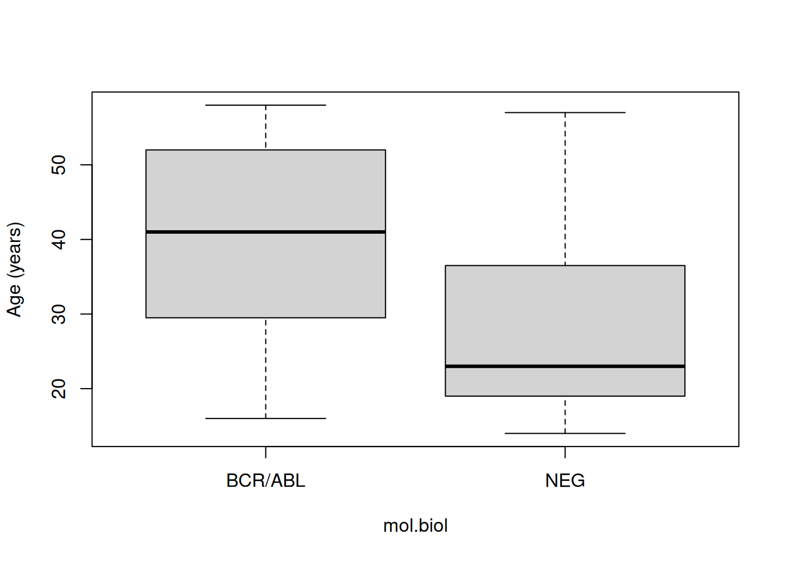
t.test(age ~ mol.biol, bcrabl)
Welch Two Sample t-test
data: age by mol.biol
t = 4.8172, df = 68.529, p-value = 8.401e-06
alternative hypothesis: true difference in means between group BCR/ABL and group NEG is not equal to 0
95 percent confidence interval:
7.13507 17.22408
sample estimates:
mean in group BCR/ABL mean in group NEG
40.25000 28.07042 This case study is a second walk through data manipulation and visualization. We use data from the US Center for Disease Control’s Behavioral Risk Factor Surveillance System (BRFSS) annual survey: a random sample of 10000 individuals from each of 1990 and 2010.
brfss <- read.csv("data/BRFSS-subset.csv")
brfss$Sex <- factor(brfss$Sex)
brfss$Year <- factor(brfss$Year)
dim(brfss)[1] 20000 5head(brfss) Age Weight Sex Height Year
1 31 48.98798 Female 157.48 1990
2 57 81.64663 Female 157.48 1990
3 43 80.28585 Male 177.80 1990
4 72 70.30682 Male 170.18 1990
5 31 49.89516 Female 154.94 1990
6 58 54.43108 Female 154.94 1990summary(brfss) Age Weight Sex Height Year
Min. :18.00 Min. : 34.93 Female:12039 Min. :105.0 1990:10000
1st Qu.:36.00 1st Qu.: 61.69 Male : 7961 1st Qu.:162.6 2010:10000
Median :51.00 Median : 72.57 Median :168.0
Mean :50.99 Mean : 75.42 Mean :169.2
3rd Qu.:65.00 3rd Qu.: 86.18 3rd Qu.:177.8
Max. :99.00 Max. :278.96 Max. :218.0
NAs :139 NAs :649 NAs :184 How many males and females in each year?
xtabs(~ Sex + Year, brfss) Year
Sex 1990 2010
Female 5718 6321
Male 4282 3679A scatterplot of the square root of weight versus height. The square root makes the distribution of weights more symmetric.
plot(sqrt(Weight) ~ Height, brfss, main = "All Years, Both Sexes")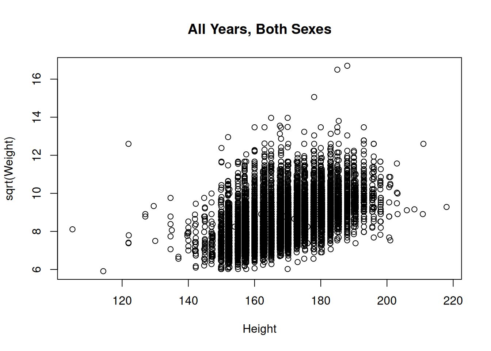
We can color the points by sex: indexing a vector of colors with a factor uses the level of each observation (here Female = 1, Male = 2). With many points, small symbols (pch = 20) and semi-transparent colors reduce over-plotting.
cols <- adjustcolor(c("tomato", "steelblue"), alpha.f = 0.3)
plot(sqrt(Weight) ~ Height, brfss, col = cols[brfss$Sex], pch = 20,
main = "All Years, Both Sexes")
legend("topleft", legend = levels(brfss$Sex), col = cols, pch = 20)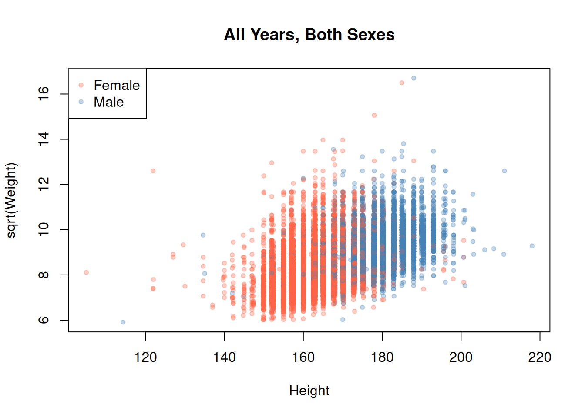
Two panels in one figure, with par(mfcol = ...):
brfss2010 <- brfss[brfss$Year == "2010", ]
opar <- par(mfcol = c(1, 2))
plot(sqrt(Weight) ~ Height, brfss2010[brfss2010$Sex == "Female", ],
main = "2010, Female")
plot(sqrt(Weight) ~ Height, brfss2010[brfss2010$Sex == "Male", ],
main = "2010, Male")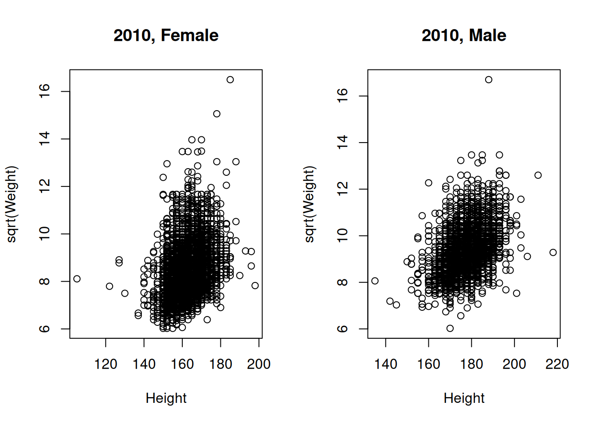
par(opar) # reset 'par' to its original valueSome heights and weights are missing. Let’s count them and remove those rows.
sum(is.na(brfss$Height))[1] 184sum(is.na(brfss$Weight))[1] 649drop <- is.na(brfss$Height) | is.na(brfss$Weight)
sum(drop)[1] 735brfss <- brfss[!drop, ]ggplot2 builds a plot layer by layer: we specify the data, the aesthetic mapping (which variable goes on which axis, which one defines the color, …) with aes(), and then one or more geometries (geom_point(), geom_boxplot(), …), combined with +.
ggplot(brfss, aes(x = Height, y = sqrt(Weight))) +
geom_point() +
ylab("Square root of Weight") +
ggtitle("All Years, Both Sexes")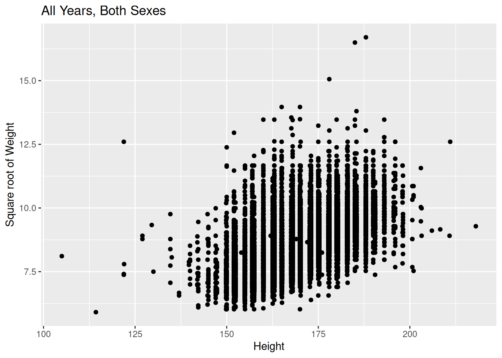
Color the female and male points differently, or plot them in different panels with facet_grid().
ggplot(brfss, aes(x = Height, y = sqrt(Weight), color = Sex)) +
geom_point(alpha = 0.4)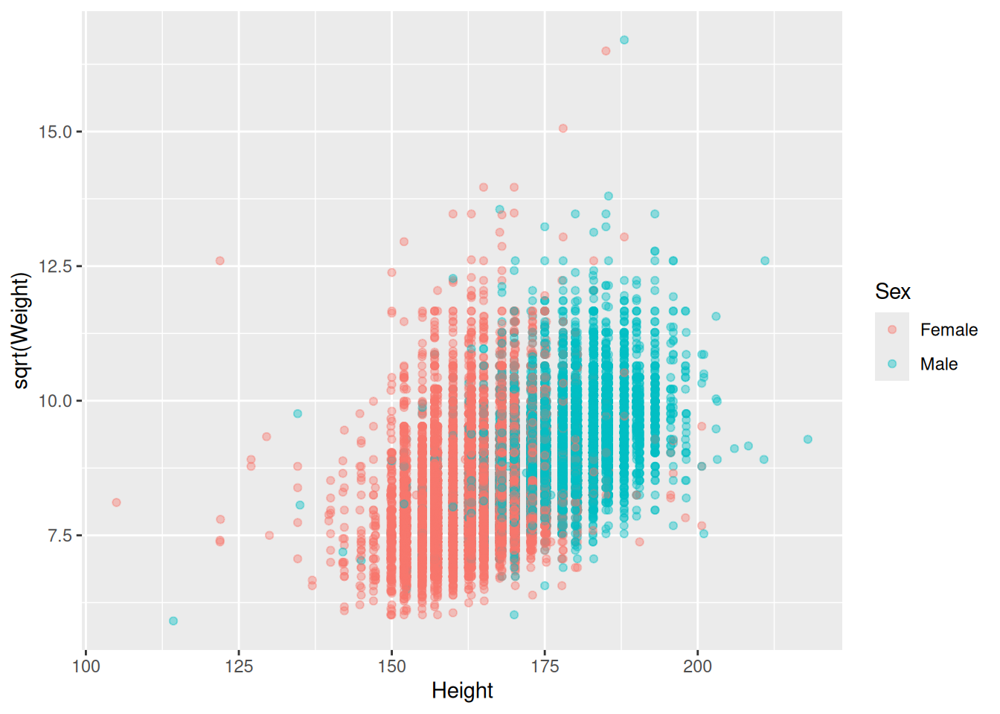
ggplot(brfss, aes(x = Height, y = sqrt(Weight), color = Sex)) +
geom_point(alpha = 0.4) +
facet_grid(Sex ~ .)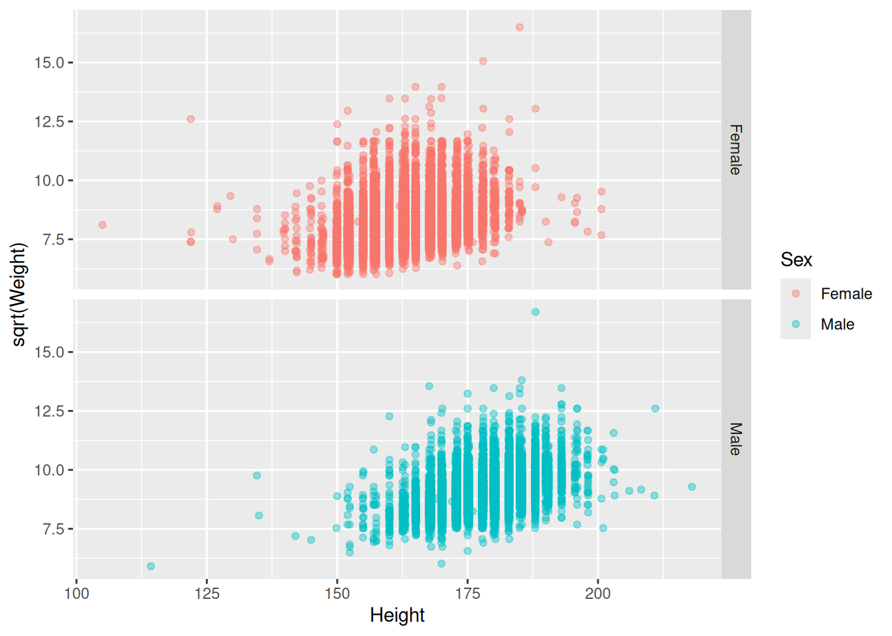
Density curves of weight for males and females in 2010:
brfss2010 <- brfss[brfss$Year == "2010", ]
ggplot(brfss2010, aes(x = sqrt(Weight), fill = Sex)) +
geom_density(alpha = 0.25)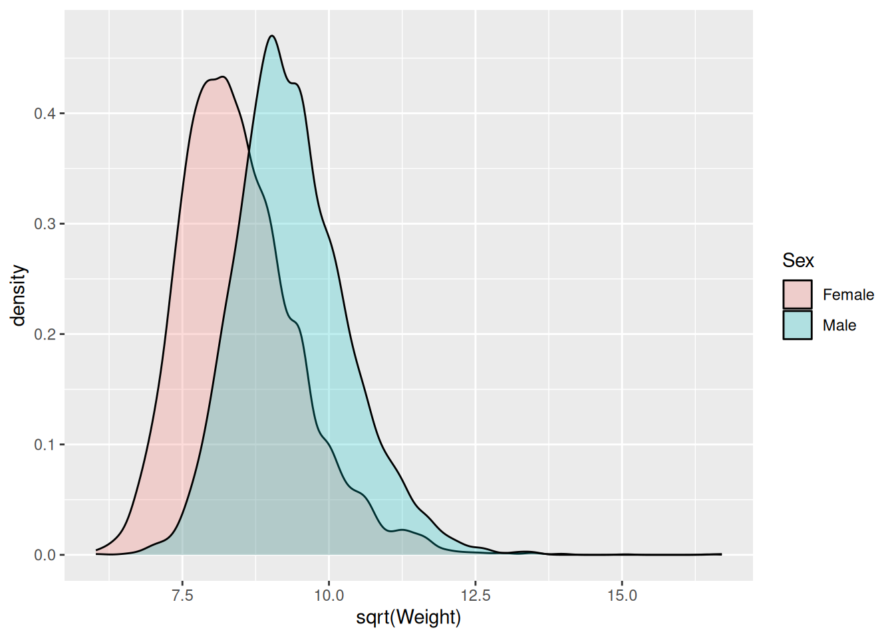
A partially specified plot can be saved in an object and completed later. Here we add a linear regression line, with its 95% confidence band, for each sex.
sps <- ggplot(brfss, aes(x = Height, y = sqrt(Weight), color = Sex)) +
geom_point(alpha = 0.4) +
scale_color_brewer(palette = "Set1")
sps + geom_smooth(method = "lm")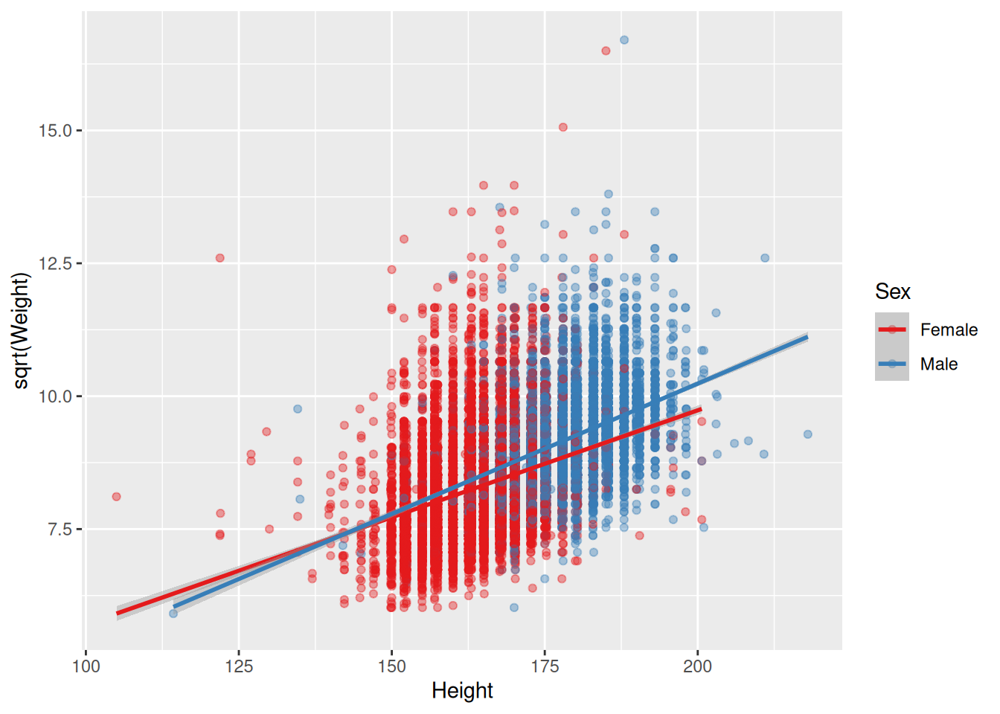
The dplyr package offers a readable way to compute summaries by group. The pipe |> passes the object on its left as the first argument of the function on its right, so you can read the code as a sequence of steps: “take brfss, then group by sex and year, then summarize”.
library(dplyr)
brfss |>
dplyr::group_by(Sex, Year) |>
dplyr::summarize(
n = n(),
mean_weight = mean(Weight),
median_weight = median(Weight),
sd_weight = sd(Weight)
)# A tibble: 4 × 6
# Groups: Sex [2]
Sex Year n mean_weight median_weight sd_weight
<fct> <fct> <int> <dbl> <dbl> <dbl>
1 Female 1990 5477 64.8 62.1 13.8
2 Female 2010 5931 73.0 69.4 18.2
3 Male 1990 4238 81.2 79.4 13.5
4 Male 2010 3619 88.9 86.2 18.4In a genomic experiment we typically have:
We could keep these as three separate objects, but it is very easy to make mistakes: if we remove a sample from the count matrix and forget to remove it from the sample sheet, the two are no longer aligned. The Bioconductor SummarizedExperiment class keeps the three pieces together, so that subsetting the object subsets all of them consistently.
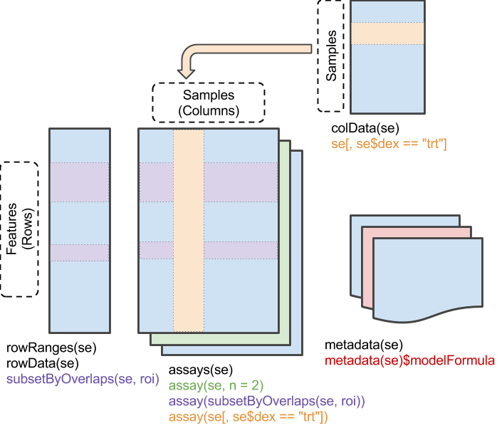
assay() / assays(): the matrix (or matrices) of measurements;colData(): information about the samples (columns);rowData() / rowRanges(): information about the features (rows);metadata(): information about the experiment as a whole.We use an RNA-seq experiment on airway smooth muscle cells from four donors (the cell column), each treated (trt) or not (untrt) with dexamethasone (the dex column), a corticosteroid used to treat asthma.
First, we read the read counts. In the file, each row is a sample and each column a gene, so we transpose the table with t() to have genes in rows, as expected by Bioconductor.
counts_df <- read.csv("data/airway-read-counts.csv", row.names = 1)
dim(counts_df)[1] 8 33469counts_df[, 1:4] ENSG00000000003 ENSG00000000419 ENSG00000000457 ENSG00000000460
SRR1039508 679 467 260 60
SRR1039509 448 515 211 55
SRR1039512 873 621 263 40
SRR1039513 408 365 164 35
SRR1039516 1138 587 245 78
SRR1039517 1047 799 331 63
SRR1039520 770 417 233 76
SRR1039521 572 508 229 60counts <- t(as.matrix(counts_df))
dim(counts)[1] 33469 8head(counts) SRR1039508 SRR1039509 SRR1039512 SRR1039513 SRR1039516
ENSG00000000003 679 448 873 408 1138
ENSG00000000419 467 515 621 365 587
ENSG00000000457 260 211 263 164 245
ENSG00000000460 60 55 40 35 78
ENSG00000000938 0 0 2 0 1
ENSG00000000971 3251 3679 6177 4252 6721
SRR1039517 SRR1039520 SRR1039521
ENSG00000000003 1047 770 572
ENSG00000000419 799 417 508
ENSG00000000457 331 233 229
ENSG00000000460 63 76 60
ENSG00000000938 0 0 0
ENSG00000000971 11027 5176 7995Then we read the sample sheet, and use the run identifier as row names so that they match the column names of the count matrix.
sample_sheet <- read.csv("data/airway-sample-sheet.csv")
rownames(sample_sheet) <- sample_sheet$Run
sample_sheet$dex <- factor(sample_sheet$dex, levels = c("untrt", "trt"))
sample_sheet SampleName cell dex albut Run avgLength Experiment
SRR1039508 GSM1275862 N61311 untrt untrt SRR1039508 126 SRX384345
SRR1039509 GSM1275863 N61311 trt untrt SRR1039509 126 SRX384346
SRR1039512 GSM1275866 N052611 untrt untrt SRR1039512 126 SRX384349
SRR1039513 GSM1275867 N052611 trt untrt SRR1039513 87 SRX384350
SRR1039516 GSM1275870 N080611 untrt untrt SRR1039516 120 SRX384353
SRR1039517 GSM1275871 N080611 trt untrt SRR1039517 126 SRX384354
SRR1039520 GSM1275874 N061011 untrt untrt SRR1039520 101 SRX384357
SRR1039521 GSM1275875 N061011 trt untrt SRR1039521 98 SRX384358
Sample BioSample
SRR1039508 SRS508568 SAMN02422669
SRR1039509 SRS508567 SAMN02422675
SRR1039512 SRS508571 SAMN02422678
SRR1039513 SRS508572 SAMN02422670
SRR1039516 SRS508575 SAMN02422682
SRR1039517 SRS508576 SAMN02422673
SRR1039520 SRS508579 SAMN02422683
SRR1039521 SRS508580 SAMN02422677## always check that samples are in the same order!
identical(colnames(counts), rownames(sample_sheet))[1] TRUENow we put everything together.
library(SummarizedExperiment)
se <- SummarizedExperiment(
assays = list(counts = counts),
colData = sample_sheet
)
seclass: SummarizedExperiment
dim: 33469 8
metadata(0):
assays(1): counts
rownames(33469): ENSG00000000003 ENSG00000000419 ... ENSG00000273492
ENSG00000273493
rowData names(0):
colnames(8): SRR1039508 SRR1039509 ... SRR1039520 SRR1039521
colData names(9): SampleName cell ... Sample BioSampledim(se)[1] 33469 8assayNames(se)[1] "counts"assay(se, "counts")[1:5, ] SRR1039508 SRR1039509 SRR1039512 SRR1039513 SRR1039516
ENSG00000000003 679 448 873 408 1138
ENSG00000000419 467 515 621 365 587
ENSG00000000457 260 211 263 164 245
ENSG00000000460 60 55 40 35 78
ENSG00000000938 0 0 2 0 1
SRR1039517 SRR1039520 SRR1039521
ENSG00000000003 1047 770 572
ENSG00000000419 799 417 508
ENSG00000000457 331 233 229
ENSG00000000460 63 76 60
ENSG00000000938 0 0 0colData(se)DataFrame with 8 rows and 9 columns
SampleName cell dex albut Run avgLength
<character> <character> <factor> <character> <character> <integer>
SRR1039508 GSM1275862 N61311 untrt untrt SRR1039508 126
SRR1039509 GSM1275863 N61311 trt untrt SRR1039509 126
SRR1039512 GSM1275866 N052611 untrt untrt SRR1039512 126
SRR1039513 GSM1275867 N052611 trt untrt SRR1039513 87
SRR1039516 GSM1275870 N080611 untrt untrt SRR1039516 120
SRR1039517 GSM1275871 N080611 trt untrt SRR1039517 126
SRR1039520 GSM1275874 N061011 untrt untrt SRR1039520 101
SRR1039521 GSM1275875 N061011 trt untrt SRR1039521 98
Experiment Sample BioSample
<character> <character> <character>
SRR1039508 SRX384345 SRS508568 SAMN02422669
SRR1039509 SRX384346 SRS508567 SAMN02422675
SRR1039512 SRX384349 SRS508571 SAMN02422678
SRR1039513 SRX384350 SRS508572 SAMN02422670
SRR1039516 SRX384353 SRS508575 SAMN02422682
SRR1039517 SRX384354 SRS508576 SAMN02422673
SRR1039520 SRX384357 SRS508579 SAMN02422683
SRR1039521 SRX384358 SRS508580 SAMN02422677se$dex # shortcut for colData(se)$dex[1] untrt trt untrt trt untrt trt untrt trt
Levels: untrt trtSubsetting works like for a data frame, [genes, samples], and the sample sheet follows the counts automatically.
se_untrt <- se[, se$dex == "untrt"]
se_untrtclass: SummarizedExperiment
dim: 33469 4
metadata(0):
assays(1): counts
rownames(33469): ENSG00000000003 ENSG00000000419 ... ENSG00000273492
ENSG00000273493
rowData names(0):
colnames(4): SRR1039508 SRR1039512 SRR1039516 SRR1039520
colData names(9): SampleName cell ... Sample BioSamplecolData(se_untrt)DataFrame with 4 rows and 9 columns
SampleName cell dex albut Run avgLength
<character> <character> <factor> <character> <character> <integer>
SRR1039508 GSM1275862 N61311 untrt untrt SRR1039508 126
SRR1039512 GSM1275866 N052611 untrt untrt SRR1039512 126
SRR1039516 GSM1275870 N080611 untrt untrt SRR1039516 120
SRR1039520 GSM1275874 N061011 untrt untrt SRR1039520 101
Experiment Sample BioSample
<character> <character> <character>
SRR1039508 SRX384345 SRS508568 SAMN02422669
SRR1039512 SRX384349 SRS508571 SAMN02422678
SRR1039516 SRX384353 SRS508575 SAMN02422682
SRR1039520 SRX384357 SRS508579 SAMN02422683se[1:10, 1:2]class: SummarizedExperiment
dim: 10 2
metadata(0):
assays(1): counts
rownames(10): ENSG00000000003 ENSG00000000419 ... ENSG00000001167
ENSG00000001460
rowData names(0):
colnames(2): SRR1039508 SRR1039509
colData names(9): SampleName cell ... Sample BioSampleThe library size of a sample is the total number of reads assigned to genes, i.e., the sum of each column.
lib_size <- colSums(assay(se))
lib_sizeSRR1039508 SRR1039509 SRR1039512 SRR1039513 SRR1039516 SRR1039517 SRR1039520
20637971 18809481 25348649 15163415 24448408 30818215 19126151
SRR1039521
21164133 Library sizes differ between samples for technical reasons (how deeply each sample was sequenced), not because of biology. To compare samples, we divide each column by its library size and multiply by one million, obtaining counts per million (CPM). sweep() applies an operation to each column of a matrix. A SummarizedExperiment can store several assays with the same dimensions.
assay(se, "cpm") <- sweep(assay(se, "counts"), 2, lib_size, "/") * 1e6
assayNames(se)[1] "counts" "cpm" colSums(assay(se, "cpm")) # now every sample sums to one millionSRR1039508 SRR1039509 SRR1039512 SRR1039513 SRR1039516 SRR1039517 SRR1039520
1e+06 1e+06 1e+06 1e+06 1e+06 1e+06 1e+06
SRR1039521
1e+06 Let’s look at one gene, DUSP1 (ENSG00000120129), known to respond to glucocorticoids.
dusp1 <- assay(se, "cpm")["ENSG00000120129", ]
dusp1SRR1039508 SRR1039509 SRR1039512 SRR1039513 SRR1039516 SRR1039517 SRR1039520
32.22216 266.88668 47.85265 299.47080 33.37641 205.46291 36.33768
SRR1039521
323.18829 boxplot(dusp1 ~ se$dex, ylab = "DUSP1 (CPM)", xlab = "")
stripchart(dusp1 ~ se$dex, vertical = TRUE, add = TRUE, pch = 19)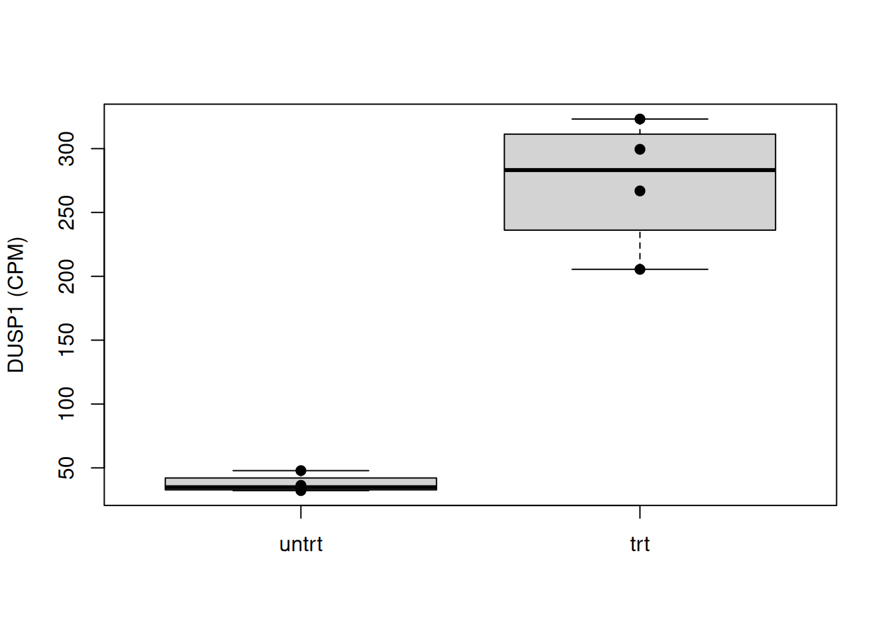
We can also store gene-level summaries in rowData(), so that they stay attached to the right gene.
rowData(se)$mean_count <- rowMeans(assay(se, "counts"))
rowData(se)$var_count <- apply(assay(se, "counts"), 1, var)
rowData(se)DataFrame with 33469 rows and 2 columns
mean_count var_count
<numeric> <numeric>
ENSG00000000003 741.875 7.12353e+04
ENSG00000000419 534.875 1.83390e+04
ENSG00000000457 242.000 2.28429e+03
ENSG00000000460 58.375 2.31125e+02
ENSG00000000938 0.375 5.53571e-01
... ... ...
ENSG00000273487 7.875 8.982143
ENSG00000273488 9.000 19.428571
ENSG00000273489 0.250 0.214286
ENSG00000273492 0.125 0.125000
ENSG00000273493 0.125 0.125000This lab is adapted from material by Martin Morgan, Sonali Arora, Lori Shepherd, and Davide Risso for Bioconductor courses.